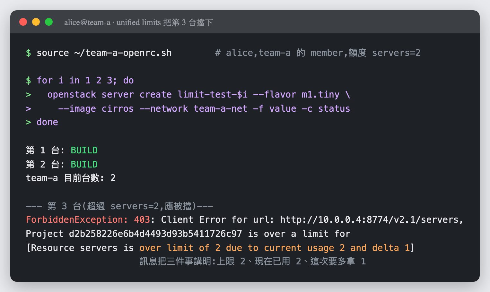

Day 27: 多租戶治理——先有租戶,才有帳單¶
Sprint 5 要把雲當生意經營,而生意的第一個問題是「跟誰收錢」。今天蓋出分帳的對象:Keystone 的 domain 階層、不用密碼的 application credentials、以及 2025.1 剛轉正的 unified limits——額度從 Nova 自己的抽屜搬進 Keystone。本章有一顆雷會把整個 compute API 弄掛,還有一顆讓所有額度讀成 0,以及一顆最陰險的:查詢回空,而限制正在執行。

你在課程的哪裡
- Sprint 5 開始:從「讓雲活得久」轉向「把雲當生意經營」。
- 今天:建立租戶結構與額度治理——後面四天的分帳對象、告警範圍、帳單抬頭,全部來自今天。
- 今天之後:Day 28 讓雲說得出每個租戶用了多少。
第一次接觸多租戶?先讀這段¶
前 26 天你都是 admin,想開什麼開什麼。真實的雲不是這樣——它同時服務很多群互不信任的人,而 Keystone 用四層結構把他們隔開:
| 名詞 | 是什麼 | 這門課的例子 |
|---|---|---|
| domain | 最外層的隔離邊界,像一家公司 | day27-corp |
| project | domain 底下的資源容器,像一個部門 | team-a(工程)、team-b(資料) |
| user | 使用者,屬於某個 domain | alice |
| role | 使用者在某個 project 上的權限 | alice 在 team-a 是 member |
關鍵在最後一列:權限不是使用者的屬性,是「使用者 × 專案」的關係。同一個 alice 可以在 team-a 是 member、在 team-b 什麼都不是。這個結構就是後面所有分帳、告警、稽核的骨架。
原理與架構:額度搬家¶
「額度(quota)」這件事,OpenStack 正在做一次搬家,而 2025.1 是它轉正的版本:
flowchart TB
subgraph OLD["舊路線:各自為政"]
direction LR
N1["Nova 自己的<br/>quota 表"] ~~~ C1["Cinder 自己的<br/>quota 表"] ~~~ E1["Neutron 自己的<br/>quota 表"]
end
subgraph NEW["unified limits:集中到 Keystone"]
direction LR
K["Keystone<br/>registered + project limits"]
end
OLD ==>|"nova-manage limits<br/>migrate_to_unified_limits"| NEW搬家的理由很實際:額度散在各服務的資料庫裡,沒有人回答得出「這個租戶總共能用多少」。集中到 Keystone 之後,額度變成身分系統的一部分,跟角色、專案放在一起管。
兩個新名詞今天會一直出現:
- registered limit:全域預設。「每個專案預設可以開 10 台機器」。
- project limit:針對特定專案的覆寫。「但 team-a 只能開 2 台」。
而 Nova 這側靠一個叫 oslo.limit 的函式庫去 Keystone 查額度。今天三顆雷有兩顆出在這個查詢的路徑上,所以先記住它怎麼找:
flowchart TB
NOVA["nova-api<br/>(要開機了,額度夠嗎)"] ==> OL["oslo.limit"]
OL ==>|"用 endpoint_id 反查"| EP["Keystone endpoint<br/>→ 得到 service + region"]
EP ==> LIM["用 service + region<br/>找 registered / project limit"]service 和 region 都對上,才查得到額度。 對不上不會報錯——它會告訴你額度是 0。
步驟¶
步驟 1:建立租戶結構¶
source /etc/kolla/admin-openrc.sh
openstack domain create day27-corp --description "Sprint 5 多租戶示範"
openstack project create --domain day27-corp team-a --description "工程團隊"
openstack project create --domain day27-corp team-b --description "資料團隊"
openstack user create --domain day27-corp --password '<你的密碼>' alice
openstack role add --project team-a --project-domain day27-corp \
--user alice --user-domain day27-corp member
驗證 alice 拿得到 team-a 的 token:
cat > ~/team-a-openrc.sh << 'EOF'
export OS_AUTH_URL=http://10.0.0.4:5000/v3
export OS_IDENTITY_API_VERSION=3
export OS_USERNAME=alice
export OS_PASSWORD='<你的密碼>'
export OS_USER_DOMAIN_NAME=day27-corp
export OS_PROJECT_NAME=team-a
export OS_PROJECT_DOMAIN_NAME=day27-corp
export OS_REGION_NAME=RegionOne
EOF
chmod 600 ~/team-a-openrc.sh
source ~/team-a-openrc.sh
openstack token issue -f value -c project_id
租戶要有自己的網路
alice 開機時會撞到這個:
前面幾天建的 day17-net 屬於 admin,team-a 根本看不到它。這正是租戶隔離在運作。給 team-a 建自己的:
openstack network create team-a-net
openstack subnet create team-a-sub --network team-a-net --subnet-range 10.27.0.0/24 \
--dns-nameserver 8.8.8.8
--dns-nameserver 是 Day 17 地雷 3 的肌肉記憶——建 subnet 必給 DNS。
步驟 2:Application Credentials——不用密碼的認證¶
CI 流程要操作雲,難道要把 alice 的密碼寫進 pipeline?Application credential 就是為這件事存在的:一組獨立的憑證,可以限定角色、設到期日,而且隨時可以撤銷而不影響本人的密碼。
source ~/team-a-openrc.sh
openstack application credential create day27-ci --role member --role reader
真正的驗證是把所有帳密環境變數清空,只靠這組憑證認證:
unset OS_USERNAME OS_PASSWORD OS_PROJECT_NAME OS_USER_DOMAIN_NAME OS_PROJECT_DOMAIN_NAME
export OS_AUTH_TYPE=v3applicationcredential
export OS_APPLICATION_CREDENTIAL_ID=<剛才的 ID>
export OS_APPLICATION_CREDENTIAL_SECRET=<剛才的 Secret>
openstack server list
沒報錯 = 完全不用密碼就通過認證,並查到 team-a 的資源。
Secret 只顯示一次
建立時那串 86 字元的 secret 之後再也查不到。沒存下來就只能刪掉重建。另外,用腳本抓 ID 時會踩地雷 4——這個指令的 JSON 欄位名是大寫的。
步驟 3:unified limits 遷移¶
先看現況,registered limit 是空的:
Nova 提供了搬家工具,先 dry-run:
The following resource classes were found during the scan:
+-----------------+------------------+
| Resource | Registered Limit |
+-----------------+------------------+
| class:DISK_GB | missing |
| class:MEMORY_MB | missing |
| class:VCPU | missing |
+-----------------+------------------+
WARNING: It is strongly recommended to create registered limits for resource
classes missing limits in Keystone before proceeding.
真的執行:
ec8ba3a754d44487879a381264baf009 servers 10
ec8ba3a754d44487879a381264baf009 class:VCPU 20
ec8ba3a754d44487879a381264baf009 class:MEMORY_MB 51200
ec8ba3a754d44487879a381264baf009 server_metadata_items 128
ec8ba3a754d44487879a381264baf009 server_injected_files 5
...
舊 quota 搬進 Keystone 了。但這個工具留下兩個坑:class:DISK_GB 沒有對應的舊 quota,所以沒補齊;而且它建出來的 limit 沒有 region——那顆會在地雷 2 爆炸。
補上 team-a 的專屬額度(比預設嚴格,這樣才驗得出來):
NOVA_SVC=$(openstack service list -f value -c ID -c Type | awk '$2=="compute"{print $1}')
TEAM_A=$(openstack project show team-a -f value -c id)
openstack limit create --service "$NOVA_SVC" --region RegionOne \
--project "$TEAM_A" --resource-limit 2 servers
openstack limit create --service "$NOVA_SVC" --region RegionOne \
--project "$TEAM_A" --resource-limit 4 class:VCPU
那行 awk 不是為了炫技——openstack service list --service compute 這個寫法不存在(地雷 5)。
步驟 4:切換 quota driver¶
告訴 Nova 改用新的額度來源:
sudo tee /etc/kolla/config/nova/nova-api.conf << 'EOF'
[quota]
driver = nova.quota.UnifiedLimitsDriver
[oslo_limit]
auth_url = http://10.0.0.4:5000/v3
auth_type = password
user_domain_id = default
username = nova
password = <nova_keystone_password>
system_scope = all
endpoint_id = <nova 的 public endpoint id>
EOF
sudo cp /etc/kolla/config/nova/nova-api.conf /etc/kolla/config/nova/nova-conductor.conf
[oslo_limit] 那一整段不能省——少了它,整個 compute API 會 500(地雷 1)。而 system_scope = all 也不是裝飾:nova 這個使用者必須有 system 層級的讀權限,否則查不到別人專案的額度:
步驟 5:驗收——第 3 台必須被擋下¶
team-a 的額度是 servers=2。開三台,前兩台該過,第三台該死:
source ~/team-a-openrc.sh
for i in 1 2 3; do
openstack server create limit-test-$i --flavor m1.tiny --image cirros \
--network team-a-net -f value -c status
done
第 1 台: BUILD
第 2 台: BUILD
team-a 目前台數: 2
--- 第 3 台(超過 servers=2,應被擋)---
ForbiddenException: 403: Project d2b258226e6b4d4493d93b5411726c97 is over a limit for
[Resource servers is over limit of 2 due to current usage 2 and delta 1]

額度真的擋下了,而且訊息直接告訴你上限、現況、以及這次要多拿的量。 這就是 unified limits 在運作的樣子——注意擋人的不是 Nova 自己的抽屜,是 Keystone 裡那筆 servers=2。
清乾淨:openstack server delete limit-test-1 limit-test-2。
這些東西在主控台看得到嗎?
一半看得到,而看不到的那一半正好在示範地雷 3。
- 額度看得到:Horizon 的 專案 → Compute → Overview 有一區 Limit Summary,把 Instances、VCPUs、RAM 的用量畫成圓餅圖(
Used 4 of 10這種)——那個分母就是今天設的 unified limits。 - domain 階層看不到:Identity → Projects 列得出
team-a(工程團隊)、team-b(資料團隊),但 Domain Name 那欄顯示-,不是day27-corp。而導覽列裡根本沒有 Domains 這一項;直接打/identity/domains/會回You are not authorized to access this page。
最後那個「未授權」不是權限設錯——是 admin 的 token scope 在 admin 專案上,而 domain 是專案之上的東西。跟地雷 3 一模一樣的道理:在 Keystone 的世界裡,你看到什麼永遠取決於你是誰,連主控台也不例外。
所以今天的畫面是上面那張終端機——因為額度真正說話的地方是 API 的回應,不是圓餅圖。
驗收 checkpoint¶
逐項驗證,全部符合判準才算完成今天:
| 驗證 | 判準 | 本課環境的結果 |
|---|---|---|
| domain 階層 | day27-corp → team-a / team-b,alice 在 team-a 是 member |
符合 |
| 租戶隔離 | alice 看不到 admin 的網路 | No Network found(正是隔離生效) |
| app credential | 清空所有帳密環境變數仍能認證 | 符合 |
| 遷移 | 舊 quota 進了 Keystone 的 registered limits | servers 10、VCPU 20、MEMORY_MB 51200… |
| compute API | 切換 driver 後 API 仍正常 | 補上 [oslo_limit] 後正常(見地雷 1) |
| 額度真的擋下 | 第 3 台被 403,訊息來自 unified limits | over limit of 2 due to current usage 2 and delta 1 |
| Secure RBAC | 見下方「誠實的現況」 | △ 量不出來,列為概念討論 |
地雷記錄¶
地雷 1:切了 driver 沒設 [oslo_limit],整個 compute API 掛掉¶
症狀:改完 driver = nova.quota.UnifiedLimitsDriver 重新部署後,開機不是被擋,是整個炸開:
HttpException: 500: Server Error for url: http://10.0.0.4:8774/v2.1/servers,
Unexpected API Error... <class 'oslo_limit.exception.SessionInitError'>
判讀關鍵:500 不是 403。額度不足會回 403,回 500 代表額度系統本身壞了,不是你超額。這個區分能省下很多時間。
根因:UnifiedLimitsDriver 要向 Keystone 查額度,而查詢用的憑證放在 [oslo_limit] 段。只切了 driver 沒給憑證 → Nova 連 session 都建不起來 → 每個 API 請求都爆。
解法:補完整的 [oslo_limit] 段(見步驟 4),並給 nova 使用者 system 層級的 reader 角色。
教訓:這是「半套設定」最惡劣的一種——它不是讓新功能失效,是讓舊功能一起死。 切換任何核心 driver 之前,先確認它的相依設定是否完整;--tags nova 的部署前檢查不會幫你檢查 [oslo_limit] 在不在。
地雷 2:region 對不上,所有額度讀成 0¶
症狀:補完 [oslo_limit],API 活了,403 也出現了——但仔細看訊息:
403: Project d2b258226e6b4d4493d93b5411726c97 is over a limit for
[Resource class:DISK_GB is over limit of 0 due to current usage 0 and delta 1,
Resource class:MEMORY_MB is over limit of 0 due to current usage 0 and delta 512,
Resource class:VCPU is over limit of 0 due to current usage 0 and delta 1,
Resource servers is over limit of 0 due to current usage 0 and delta 1]
over limit of 0——每一項額度都是 0,連一台都開不了。 但 Keystone 裡明明寫著 servers=10。
根因:三行輸出就破案了:
=== registered limits 的 region ===
servers 10 None
class:VCPU 20 None
=== nova endpoint 的 region ===
RegionOne
nova-manage limits migrate_to_unified_limits 建出來的 limit 沒有 region(None),而 nova 的 endpoint 在 RegionOne。oslo.limit 是用 endpoint 反查 service + region 再去找額度的——對不上就當作沒設,而沒設就是 0。
解法:重建時明確帶 --region RegionOne:
openstack registered limit create --service "$SVC" --region RegionOne \
--default-limit "$V" "$R"
openstack limit create --service "$SVC" --region RegionOne \
--project "$TEAM_A" --resource-limit 2 servers
教訓:官方遷移工具產生的資料,不保證能被官方的執行路徑讀到。 這不是誰寫錯了,是兩邊對「region 可以是 None 嗎」的假設不一致。跑完任何 migrate 指令,一定要驗證結果真的生效,而不是看到「遷移完成」就往下走。
殘骸要清
舊的 None region 記錄有兩筆刪不掉(被 project limit 參照),於是 Keystone 裡會同時存在 region=None 與 region=RegionOne 兩份。生效的是 RegionOne 那份,None 那份是死資料——但它會誤導之後每一次查詢。等 project limit 也重建到 RegionOne 之後,記得回頭把 None 的殘骸清掉。
地雷 3:查詢回空,而限制正在執行¶
這是本章最陰險的一顆,而且它是在兩天後的 Day 29 才咬人的。
症狀:想確認 team-a 還有沒有額度限制:
它一個字都沒印。 不是錯誤、不是「你沒權限看」——就是零筆結果,離開代碼 0。拿掉 --project 查全部,一樣什麼都沒有。
不信邪,繞過 CLI 直接問 Keystone:
curl -s -H "X-Auth-Token: $TOKEN" "http://10.0.0.4:5000/v3/limits" \
| python3 -c "import sys,json; print('總數:', len(json.load(sys.stdin)['limits']))"
API 也說沒有。於是你合理地認為 team-a 沒有專案額度覆寫。然後 Nova 賞你一巴掌:
403: Project ... is over a limit for
[Resource servers is over limit of 2 due to current usage 2 and delta 1]
限制一直都在,而且正在執行。
根因:Keystone 的 GET /v3/limits 會依 token 的 scope 過濾。用「scope 在 admin 專案」的 token 去查,只看得到 admin 專案的限制——看別的專案就是空的,而且不會告訴你「你沒權限看」,就只是空的。
而 Nova 看得到,是因為它的 [oslo_limit] 設了 system_scope = all(步驟 4 那行不是裝飾)。
解法:用 system-scoped token 查:
source /etc/kolla/admin-openrc.sh
unset OS_PROJECT_NAME OS_PROJECT_DOMAIN_NAME OS_PROJECT_ID \
OS_TENANT_NAME OS_TENANT_ID OS_PROJECT_DOMAIN_ID
export OS_SYSTEM_SCOPE=all
openstack limit list -f value -c "Project ID" -c "Resource Name" -c "Resource Limit"
限制在那裡,一直都在。
教訓:「查詢回空」和「東西不存在」是兩件事。 這一族的雷比報錯危險得多——報錯會停下你,回空會讓你帶著錯誤的世界觀繼續往下走。Day 29 地雷 5 是同族(CLI 欄位顯示 null),Day 17 地雷 2 也是(少一個點,一切照常但整合默默不動)。
通則:當查詢結果讓你想說「這不可能」時,換一個身分或介面再問一次。 在 Keystone 的世界裡,「你看到什麼」永遠取決於「你是誰」。
地雷 4:application credential 的 JSON 欄位是大寫¶
症狀:想用腳本抓剛建立的 credential ID:
openstack application credential create day27-ci -f json | python3 -c "
import sys,json; print(json.load(sys.stdin)['id'])"
根因:直接看原始輸出就破案:
這個指令的 JSON 欄位名是大寫的 ID / Name / Secret / Roles,不像其他 openstack 指令用小寫。
解法:用 -f value -c ID 直接取值,不要自己解 JSON。
教訓:openstack CLI 的輸出格式不是全域一致的。與其猜欄位名,不如用 -f value -c <欄位> 讓 CLI 自己處理——順便避開 Day 15 地雷 3 那種「grep 表格」的脆弱寫法。
地雷 5:openstack service list --service 不存在¶
症狀:
而如果沒發現,那個空值會一路流到下一個指令:
根因:service list 沒有 --service 這個過濾參數(那是別的指令的參數)。
解法:
教訓:重點不是這個參數本身,是「空值會安靜地往下流」。shell 裡一個失敗的 $(...) 會變成空字串,然後下一個指令拿著空字串去做事,報出一個看起來完全無關的錯('' is not a 'uuid')。寫自動化時,抓到的 ID 要立刻驗證非空,否則你會在三步之後除一個假的錯。
Secure RBAC:誠實的現況¶
Day 26 預告過今天要談「新一代權限模型」。這裡必須誠實交代:本課環境沒能驗證它。
Secure RBAC 是 OpenStack 這幾年在做的權限改革——引入 reader 角色、system/domain/project 三種 scope、以及 enforce_scope / enforce_new_defaults 兩個開關。截至 2026-07,Nova、Neutron、Octavia 在 2025.1 已預設開啟強制執行,Cinder 進度落後。
但這件事很難量。先讀設定檔:
nova-api enforce_scope=(未設,用預設)
neutron-server enforce_scope=(未設,用預設)
cinder-api enforce_scope=(未設,用預設)
全部「未設」——因為 kolla 沒明寫,服務吃程式碼裡的預設值。改成直接問跑著的容器:
nova_api enforce_scope/new_defaults = True True
neutron_server enforce_scope/new_defaults = True True
cinder_api enforce_scope/new_defaults = True True
看起來全開了。但這個數字量到的是 oslo.policy 函式庫的預設值,不是各服務實際覆寫後的生效值——兩者未必相同,而這種靜態讀值分不出兩者。
所以本章的判決是:列為概念討論,不宣稱已驗證。 你今天確實用到了 Secure RBAC 的一部分——步驟 4 那個 --system all reader 就是 system scope 加 reader 角色的實例,而且它有效(地雷 3 就是靠它才看得見真相)。但「哪些服務真的在強制執行 scope」,這門課目前答不出來。
這個△其實測得出來(留給想收尾的人)
上面說「靜態讀值分不出兩者」是對的,但這不代表無法得知——有兩條路能把這個△變成可判決:
- 行為測試:拿一個 project-scoped 的 admin token 去打一個「scope 不符時會明確拒絕」的 system-scope API。若
enforce_scope真的生效會被擋(403),沒生效會照過——過或擋,直接告訴你答案。但要挑對 API:本章 地雷 3 實測過GET /v3/limits對 project token 是回 200 + 靜默過濾成空清單(既不 403 也不算「照過」),這種過濾型端點當不了判別器,得選 scope 不符會回 403 的操作。 oslopolicy-policy-generator:對各服務跑一次,它吐出的是生效後的 policy 值,不是函式庫預設值,正好補上靜態讀值量不到的那一半。
本課沒有逐一跑這兩條(所以維持△),但它們的存在說明:這是「本課還沒去驗」,不是「無法得知」。
帶得走的東西¶
- 權限綁的是「使用者 × 專案」這層關係。 同一個帳號在 A 專案是 member、在 B 專案什麼都不是——所有分帳、告警、稽核的邊界都從這個結構長出來。
- 額度的查詢路徑是 endpoint → service + region → limit,三段任何一段對不上,答案是 0 而不是錯誤。 這是「錯了不會叫」在額度系統的具體長相。
- 在 Keystone 的世界裡,你看到什麼取決於你是誰。 同一個 API、同一個查詢,project-scoped 與 system-scoped 的 token 看到的東西完全不同——而它不會告訴你「你看得不夠多」。
- 官方遷移工具產生的資料,不保證能被官方的執行路徑讀到。 跑完任何 migrate,要驗證結果真的生效,不是看到「完成」就往下走。
- 切換核心 driver 是「連舊功能一起賭」的操作。 相依設定只要少一段,原本好好的 API 也會跟著壞。
延伸閱讀¶
想往下深挖,從這幾份開始:
- Nova 的 Unified Limits 指南 ——
migrate_to_unified_limits、[oslo_limit]設定、以及本章地雷 1 相依設定的官方對照。 - Keystone Unified Limits —— registered limit 與 project limit 的概念與 API;本章地雷 3 那個 scope 過濾行為的出處。
- Keystone Application Credentials —— 到期日、角色限制、access rules 等本章沒用到的進階選項。
- OpenStack Secure RBAC 現況 —— 這場改革的官方進度表;想自己判斷哪個服務走到哪一步,從這份開始。
下一步¶
分帳的對象有了。Day 28 補上分帳的依據:部署 Ceilometer,讓雲說得出每個租戶到底用了多少——資料直接流進 Day 21 建好的 Prometheus。